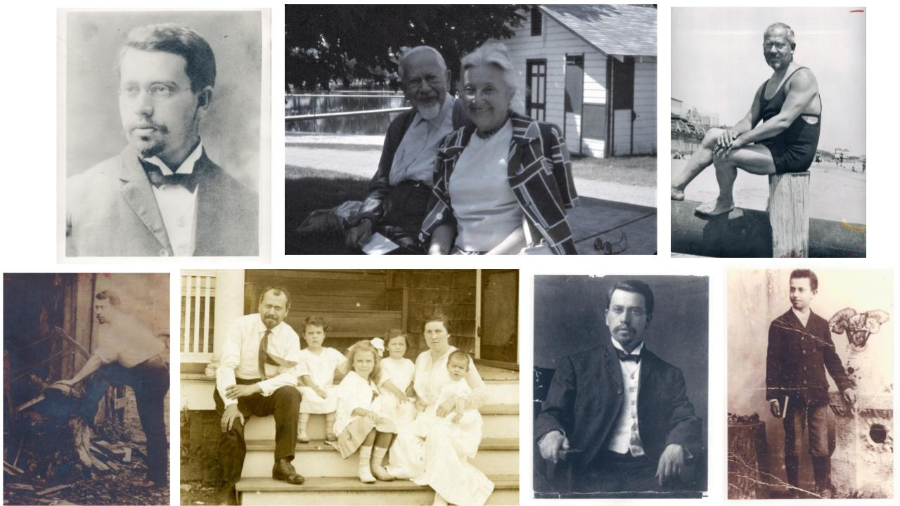

Rabbi Mordecai M. Kaplan (1881-1983) was both the founder of the Society for the Advancement of Judaism (SAJ) and the founding father of Reconstructionist Judaism. A seminal Jewish thinker and figure of great historical significance, he played a principal part in the creation of modern Judaism and was perhaps the preeminent American rabbi of the twentieth century. The quintessential synthesizer of American modernism and Jewish tradition, he might be thought of as a modern cross between Moses Maimonides and Baruch Spinoza, combining the rabbinic brilliance of the one with the philosophical radicalism of the other. More than a pure intellectual, Kaplan was actively engaged with Jewish communal life—and the most lasting community institution he created, the SAJ, is today the living legacy of his extraordinary life.